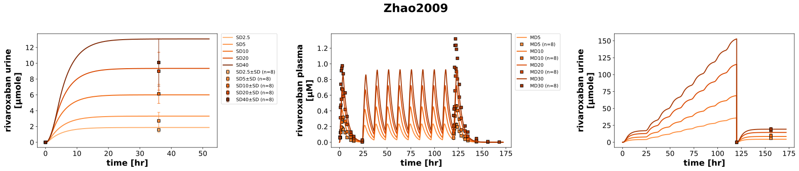
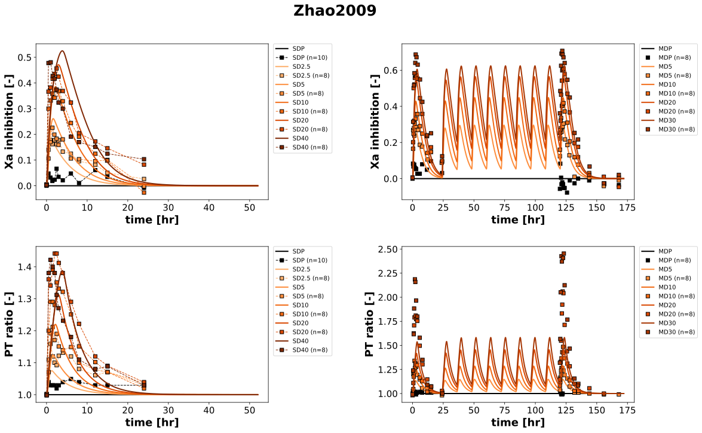

Overview
Models
| model | source |
|---|---|
| model | rivaroxaban_body_flat.xml |
Datasets
Figures (2)




Code
"""Simulation experiment of the study Zhao2009."""
from typing import ClassVar, override
from pkpdsim.metadata import (
ApplicationForm,
Coadministration,
Dosing,
Fasting,
Health,
PKPDMappingMetaData,
Route,
Tissue,
)
from sbmlsim import Q
from sbmlsim.data import DataSet
from sbmlsim.fit import FitData, FitMapping
from sbmlsim.plot import Axis, Figure
from sbmlsim.simulation import Change, Simulation
from pkdb_models.models.rivaroxaban import MODEL
from pkdb_models.models.rivaroxaban.experiments.base_experiment import (
RivaroxabanSimulationExperiment,
)
class Zhao2009(RivaroxabanSimulationExperiment):
"""Simulation experiment of Zhao2009.
Single doses (SD) and multiple doses (MD) of rivaroxaban tablets and
placebo (P) in healthy male Chinese subjects (n = 8 per dose). The single
doses of 2.5-40 mg were taken after an overnight fast; the multiple doses of
5-30 mg once on day 1 (0 hr) and day 6 (120 hr) and twice daily on days 2-5
(24, 36, ..., 108 hr), within 5 min of standardized meals (fed).
Data: the urine of 0-36 hr after a single dose and, at steady state, of
0-36 hr after the last dose (Tab. 2 and 4, the interval of the steady state
is not stated, the urine of day 6 was pooled 0-36 hr), the plasma
concentrations of the multiple doses on days 1 and 6 (Fig. 2C) and the
medians of the factor Xa inhibition and the prothrombin time ratio (Fig. 1
and 2, without dispersion, curated as means).
"""
formulations: ClassVar[list[str]] = [
"SDP",
"SD2.5",
"SD5",
"SD10",
"SD20",
"SD40",
"MDP",
"MD5",
"MD10",
"MD20",
"MD30",
]
bodyweights: ClassVar[dict[str, float]] = {
"SDP": 63.8,
"SD2.5": 62.4,
"SD5": 66.0,
"SD10": 58.4,
"SD20": 59.1,
"SD40": 62.8,
"MDP": 66.3,
"MD5": 65.4,
"MD10": 64.0,
"MD20": 68.3,
"MD30": 65.6,
}
#: one gradient of the dose for the single and the multiple doses
colors: ClassVar[dict[str, str]] = {
"SDP": "black",
"SD2.5": "#fdae6b",
"SD5": "#fd8d3c",
"SD10": "#f16913",
"SD20": "#d94801",
"SD40": "#7f2704",
"MDP": "black",
"MD5": "#fd8d3c",
"MD10": "#f16913",
"MD20": "#d94801",
"MD30": "#a63603",
}
#: the doses after the first of the multiple doses [hr]: twice daily on
#: days 2-5 and once on day 6
md_dose_times: ClassVar[list[float]] = [24, 36, 48, 60, 72, 84, 96, 108]
md_last_dose = 120.0 # [hr]
info_fig_pk: ClassVar[dict[str, str]] = {
"[Cve_riv]": "rivaroxaban",
"Aurine_riv": "rivaroxaban_urine",
}
info_fig_pd: ClassVar[dict[str, str]] = {
"Xa_inhibition": "factor Xa inhibition",
"PT_ratio": "prothrombin time (change relative)",
}
@override
def datasets(self) -> dict[str, DataSet]:
dsets = {}
for fig_id in ["Fig2C", "Fig1A_2A", "Fig1B_2B", "Tab2_4U"]:
df = self.load_dataframe(fig_id)
for label, df_label in df.groupby("label"):
label = str(label)
dset = DataSet.from_df(df_label, self.ureg)
if "rivaroxaban" in label:
dset.unit_conversion("mean", 1 / self.Mr.riv)
dsets[self.to_sid(label)] = dset
return dsets
@override
def simulations(self) -> dict[str, Simulation]:
simulations = {}
for formulation in self.formulations:
dose = 0.0 if formulation.endswith("P") else float(formulation[2:])
bw = self.bodyweights[formulation]
if formulation.startswith("SD"):
# Single dose
simulations[self.to_sid(formulation)] = Simulation(
time_unit="min",
end=52 * 60,
preinit_changes={
**self.default_changes(),
"BW": Q(bw, "kg"),
"PODOSE_riv": Q(dose, "mg"),
},
)
elif formulation.startswith("MD"):
# ten doses with meals, the urine of the steady state is
# collected from the last dose; a dose adds to what is left
# of the earlier ones
simulations[self.to_sid(formulation)] = Simulation(
time_unit="hr",
end=172,
preinit_changes={
**self.default_changes(),
"BW": Q(bw, "kg"),
"PODOSE_riv": Q(dose, "mg"),
"GU__fed": Q(self.fasting_map["fed"], "dimensionless"),
},
changes=[
self.add_doses(
self.md_dose_times, {"PODOSE_riv": Q(dose, "mg")}
),
Change(
[self.md_last_dose],
{
**self.add_doses(
[self.md_last_dose], {"PODOSE_riv": Q(dose, "mg")}
).values,
"Aurine_riv": Q(0, "mmole"),
},
),
],
)
return simulations
@override
def fit_mappings(self) -> dict[str, FitMapping]:
mappings = {}
# pharmacokinetics
for sid, name in self.info_fig_pk.items():
for formulation in self.formulations:
if formulation.endswith("P"):
# no placebo PK
continue
if formulation.startswith("SD") and "urine" not in name:
# SD has only urine PK
continue
mappings[self.to_sid(f"fm_{name}_{formulation}")] = FitMapping(
self,
reference=FitData(
self,
dataset=self.to_sid(f"{name}_{formulation}"),
xid="time",
yid="mean",
yid_sd="mean_sd" if "urine" in name else None,
count="count",
),
observable=FitData(
self,
task=self.to_sid(f"task_{formulation}"),
xid="time",
yid=sid,
),
metadata=self.metadata(
formulation,
tissue=Tissue.URINE if "urine" in name else Tissue.PLASMA,
),
)
# pharmacodynamics
for sid, name in self.info_fig_pd.items():
for formulation in self.formulations:
mappings[self.to_sid(f"fm_{name}_{formulation}")] = FitMapping(
self,
reference=FitData(
self,
dataset=self.to_sid(f"{name}_{formulation}"),
xid="time",
yid="mean",
yid_sd=None,
count="count",
),
observable=FitData(
self,
task=self.to_sid(f"task_{formulation}"),
xid="time",
yid=sid,
),
metadata=self.metadata(
formulation,
tissue=Tissue.URINE if "urine" in name else Tissue.PLASMA,
),
)
return mappings
@staticmethod
def metadata(formulation: str, tissue: Tissue) -> PKPDMappingMetaData:
"""Metadata of the mappings of a group.
Args:
formulation: the group, e.g. `SD10` or `MD20`.
tissue: the tissue of the data.
Returns:
The metadata: the single doses fasted, the multiple doses fed.
"""
single = formulation.startswith("SD")
return PKPDMappingMetaData(
tissue=tissue,
route=Route.PO,
application_form=ApplicationForm.TABLET,
dosing=Dosing.SINGLE if single else Dosing.MULTIPLE,
health=Health.HEALTHY,
fasting=Fasting.FASTED if single else Fasting.FED,
coadministration=Coadministration.NONE,
)
@override
def figures(self) -> dict[str, Figure]:
return {
**self.figure_pk(),
**self.figure_pd(),
}
def figure_pk(self) -> dict[str, Figure]:
"""Figure of rivaroxaban in plasma and urine.
The single doses have only urine data (left panel), the multiple doses
plasma (middle panel) and urine data (right panel).
"""
# the legends are right of the panels, inside they would cover the
# curves; the multiple doses of the right panel have the legend of the
# middle panel
fig = Figure(
experiment=self,
sid="Fig2C",
num_rows=1,
num_cols=3,
name=self.__class__.__name__,
settings={"legend_position": "outside"},
)
plots = fig.create_plots(
xaxis=Axis(self.label_time, unit=self.unit_time), legend=True
)
plots[2].legend = False
plots[0].set_yaxis(self.label_riv_urine, unit=self.unit_riv_urine)
plots[1].set_yaxis(self.label_riv_plasma, unit=self.unit_riv)
plots[2].set_yaxis(self.label_riv_urine, unit=self.unit_riv_urine)
for sid, name in self.info_fig_pk.items():
for formulation in self.formulations:
if formulation.endswith("P"):
# no placebo PK
continue
if formulation.startswith("SD"):
if "urine" not in name:
continue
kp = 0
else:
kp = 2 if "urine" in name else 1
# simulation
plots[kp].add_data(
task=self.to_sid(f"task_{formulation}"),
xid="time",
yid=sid,
label=formulation,
color=self.colors[formulation],
)
# data, the days 1 and 6 of the multiple doses as points
plots[kp].add_data(
dataset=self.to_sid(f"{name}_{formulation}"),
xid="time",
yid="mean",
yid_sd="mean_sd" if "urine" in name else None,
count="count",
label=formulation,
linestyle="",
color=self.colors[formulation],
)
return self.figures_by_sid(fig)
def figure_pd(self) -> dict[str, Figure]:
"""Figure of the factor Xa inhibition and the prothrombin time ratio.
The single doses are shown in the left column, the multiple doses in
the right column.
"""
fig = Figure(
experiment=self,
sid="Fig1",
num_rows=2,
num_cols=2,
name=self.__class__.__name__,
settings={"legend_position": "outside"},
)
plots = fig.create_plots(
xaxis=Axis(self.label_time, unit=self.unit_time), legend=True
)
# Xa inhibition - single dose
plots[0].set_yaxis(
self.labels["Xa_inhibition"], unit=self.units["Xa_inhibition"]
)
# Xa inhibition - multiple dose
plots[1].set_yaxis(
self.labels["Xa_inhibition"], unit=self.units["Xa_inhibition"]
)
# PT ratio - single dose
plots[2].set_yaxis(self.labels["PT_ratio"], unit=self.units["PT_ratio"])
# PT ratio - multiple dose
plots[3].set_yaxis(self.labels["PT_ratio"], unit=self.units["PT_ratio"])
for formulation in self.formulations:
col_idx = 0 if formulation.startswith("SD") else 1
color = self.colors.get(formulation, "black")
# the days 1 and 6 of the multiple doses as points
linestyle = "--" if formulation.startswith("SD") else ""
# Xa_inhibition (first row)
plots[col_idx].add_data(
task=self.to_sid(f"task_{formulation}"),
xid="time",
yid="Xa_inhibition",
label=formulation,
color=color,
)
plots[col_idx].add_data(
dataset=self.to_sid(f"factor Xa inhibition_{formulation}"),
xid="time",
yid="mean",
yid_sd=None,
count="count",
label=formulation,
color=color,
linestyle=linestyle,
)
# PT_ratio (second row)
plots[2 + col_idx].add_data(
task=self.to_sid(f"task_{formulation}"),
xid="time",
yid="PT_ratio",
label=formulation,
color=color,
)
plots[2 + col_idx].add_data(
dataset=self.to_sid(
f"prothrombin time (change relative)_{formulation}"
),
xid="time",
yid="mean",
yid_sd=None,
count="count",
label=formulation,
color=color,
linestyle=linestyle,
)
return self.figures_by_sid(fig)
if __name__ == "__main__":
MODEL.run_experiments(Zhao2009, output_dir=Zhao2009.__name__)